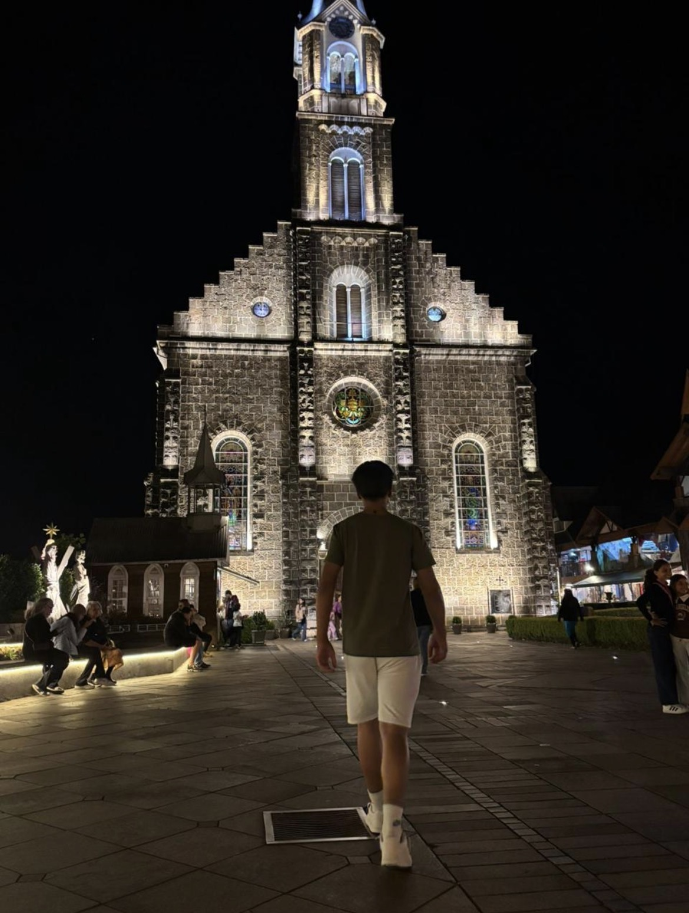
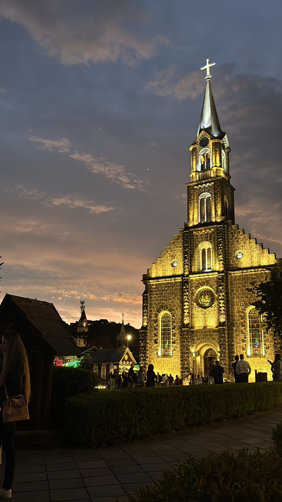
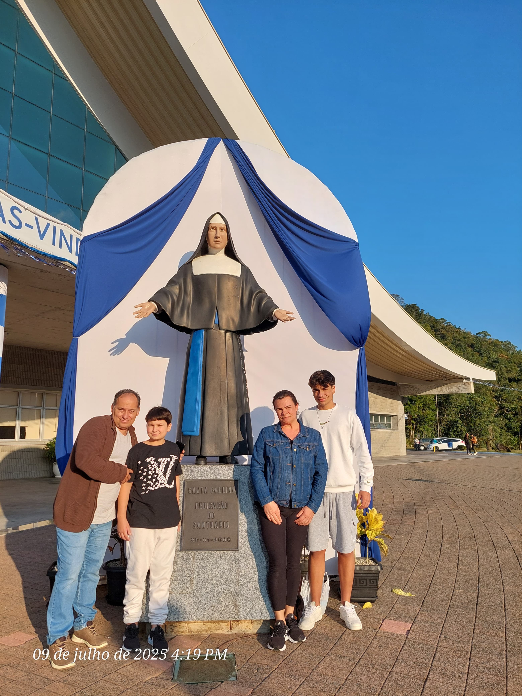
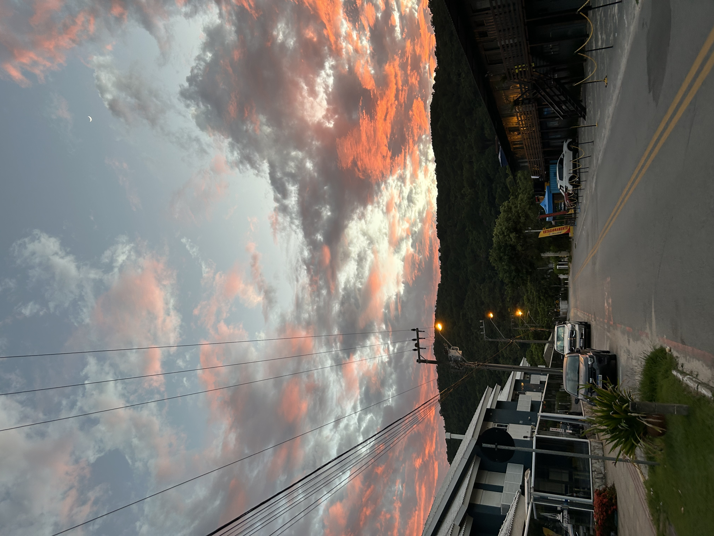
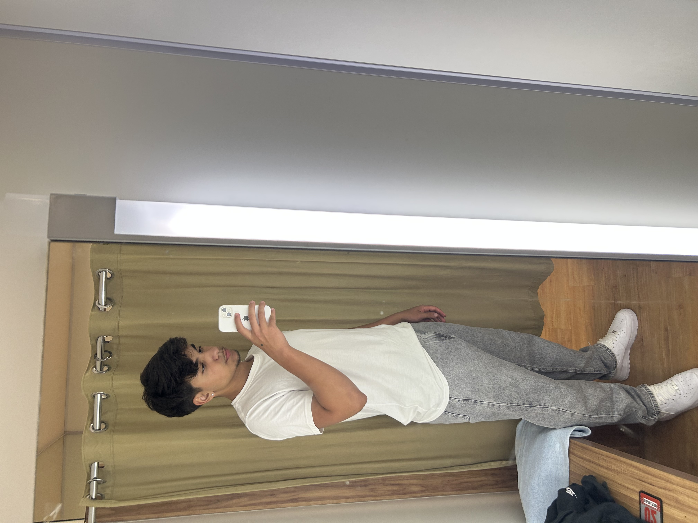

Nicolas Galvan
Portfólio Escolar
Sobre Mim

Meu nome É Nicolas Galvan, nasci em Florianópolis, Santa Catarina, no dia 10 de outubro de 2008. Estudei na escola EBM Osvaldo Machado desde a primeira série e, atualmente, estou no ensino médio na escola SESI. Tenho interesse em desenvolvimento de sistemas, mas também tenho duas grandes ambições: me formar profissionalmente na PRF (Polícia Rodoviária Federal) e em Educação Física, sou católico e gosto de tirar fotos de imagens de santos e de igrejas.
Galeria



